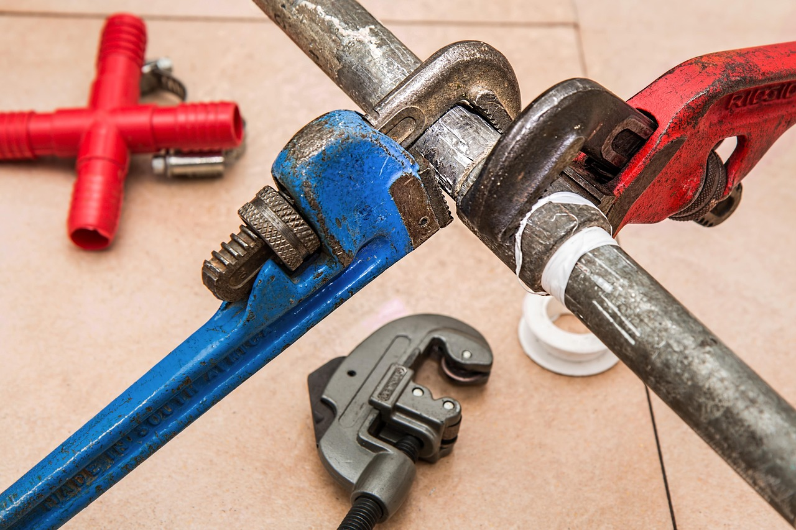

Standard Maintenance
Keep your semi trucks and heavy equipment running smoothly with our comprehensive maintenance services. We provide on-site oil changes, filter replacements, fluid checks, and routine inspections to prevent breakdowns and extend equipment life. Our mobile service brings professional maintenance directly to your location, minimizing downtime and keeping your fleet operational.
- Oil and filter changes
- Fluid level checks and top-ups
- Brake inspections and adjustments
- Belt and hose inspections
- Preventive maintenance scheduling